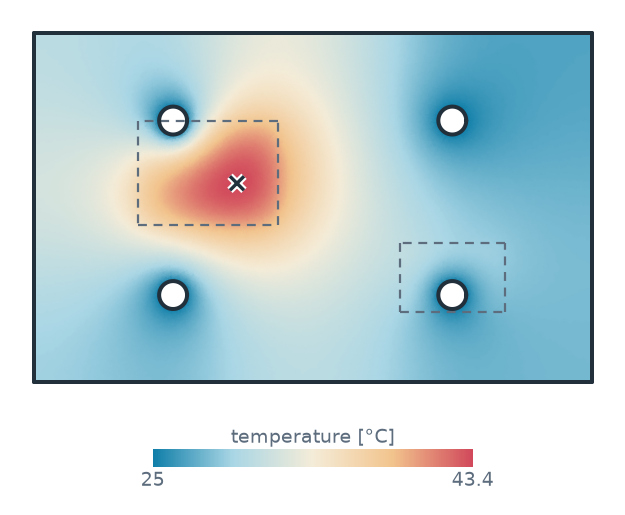
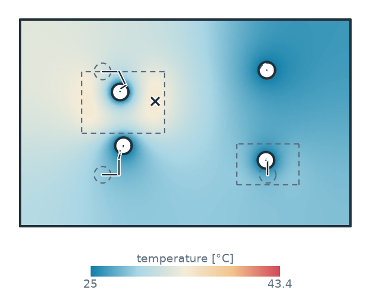
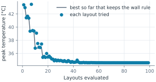
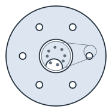
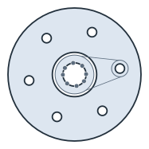

SciPy
A planex2d measurement stored on a constraint sketch is a function of the sketch’s dimensions: Update sets them, and measures reads the result. That is exactly what scipy.optimize expects, so all of SciPy works on the geometry directly, with no adapter in between. This page shows three patterns: solving for the dimension that meets a requirement, optimizing a design with constraints, and fitting a sketch to measured points. Sizes are in millimeters.
[1]:
import functools
import math
import random
import ngsolve as ngs
import planex as px
import planex.measurements as pm
from scipy.optimize import brentq, least_squares, minimize
A minimal example
The example is a disc whose diameter d is a dimension of the sketch, with its area stored as a measurement. brentq finds the diameter at which the area is 100:
[3]:
sk = px.Sketch()
sk.Circle(5, center=(0, 0), id="disc")
sk.Constrain("disc", px.Diameter, 10, id="d")
sk.Measure(lambda s: s.Face().mass, id="area")
d = brentq(lambda x: sk.Update({"d": x}).measures["area"] - 100, 1, 30)
print("diameter", d, "exact", 2 * math.sqrt(100 / math.pi))
diameter 11.283791670954928 exact 11.283791670955125
A dimension from a requirement
The example is the flange from part analysis: a rim of radius 60, a bore of radius 20, and six bolt holes of diameter d = 8 on a pitch circle of radius pcd = 40, the first one at the angle phi = 0. A construction line from the center carries the first bolt hole, and CircularPattern repeats it:
[4]:
sk = px.Sketch(id="flange")
sk.Circle(60, px.Fix, center=(0, 0), id="rim", name="rim")
sk.Circle(20, px.Fix, center=(0, 0), id="bore", name="bore")
sk.Move(sk.origin, px.Coincident).Line(40, 0, id="arm", construction=True)
sk.Circle(4, center=(40, 0), id="bolt", name="bolt")
sk.Constrain("arm.end", "bolt.center", px.Coincident)
sk.Constrain("arm", px.Distance, 40, id="pcd")
sk.Constrain(px.H, "arm", px.Angle, 0.0, id="phi")
sk.Constrain("bolt", px.Diameter, 8, id="d")
sk.CircularPattern("bolt", sk.origin, 6);
The edge distance e/d is the distance from the center of a bolt hole to the rim, divided by the diameter, and it is stored on the sketch. The question is how far out the pitch circle can go before e/d drops below 1.5. brentq finds the root of e/d − 1.5 in the dimension pcd, and it is exactly 60 − 1.5 · 8:
[5]:
def edge_distance(sketch, bolt="bolt"):
hole = sketch(bolt)
rim = sketch.Face().edges(near=hole).faces.outline
return rim.Wire().Distance(hole.center) / sketch["d"]
sk.Measure(edge_distance, id="e/d")
limit = brentq(lambda r: sk.Update({"pcd": r}).measures["e/d"] - 1.5, 40, 55)
print("pcd at most", limit, "exact", 60 - 1.5 * 8)
pcd at most 47.99999999999999 exact 48.0
Optimizing a cold plate
The example is an aluminum cold plate of 160 × 100 × 8 that carries two power modules, an IGBT with 150 W and a diode with 40 W. Four cooling channels of diameter 8 run through it at the coolant’s 25 °C, and the outer edges are insulated. Each channel is placed by two dimensions, its distances from the left and the bottom edge, so the layout has eight. They start on a regular grid:
[6]:
cp = px.Sketch(id="cold plate")
cp.Move((0, 0), px.Fix).Rectangle(160, 100, id="plate")
cp.Constrain("plate.Line.1", px.Horizontal)
cp.Constrain("plate.Line.1", px.Distance, 160, id="width")
cp.Constrain("plate.Line.2", px.Distance, 100, id="height")
start = [(40, 25), (120, 25), (40, 75), (120, 75)]
dims = []
for k, (x, y) in enumerate(start, 1):
cp.Circle(4, center=(x, y), id=f"c{k}", name="channel")
cp.Constrain(f"c{k}", px.Diameter, 8)
cp.Constrain(f"c{k}.center", "plate.Line.4", px.Distance, x, id=f"x{k}")
cp.Constrain(f"c{k}.center", "plate.Line.1", px.Distance, y, id=f"y{k}")
dims += [f"x{k}", f"y{k}"]
The modules are faces named by what they are. Glued into the plate, the names become NGSolve materials, and each module puts its power into its own footprint. The measurement PeakTemperature has NGSolve solve −k t ΔT = q, as on the field solvers page, and returns the peak temperature; it sits in a hidden cell.
[7]:
igbt = px.QuickSketch((30, 45)).Rectangle(40, 30).Face()
diode = px.QuickSketch((105, 20)).Rectangle(30, 20).Face()
igbt.name, diode.name = "IGBT", "diode"
power = {igbt: 150.0, diode: 40.0}
Two measurements are stored: the peak temperature, which is the objective, and the thinnest wall of the plate. The wall must stay at least 15 mm between two channels and between a channel and an edge, so that the channels can be drilled and hold their pressure. ignore_corners=100 leaves out the tips of the plate’s own right-angled corners, which are not walls. checks reads both for one layout, and its cache lets the objective and the constraint share the solve.
The start is the regular grid, the best layout for a uniform load. COBYLA, SciPy’s optimizer for constraints without derivatives, moves two channels to the IGBT and one under the diode, leaves the fourth away from both modules, and brings the peak down by several degrees. It stops once its steps have shrunk to tol, and the wall rule does not decide where: the thinnest wall, between the two channels at the IGBT, ends up wider than the 15 mm required.
[9]:
cp.Measure(PeakTemperature(power), id="peak")
cp.Measure(pm.MinThickness(ignore_corners=100), id="wall")
path = []
@functools.lru_cache(maxsize=None)
def checks(x):
path.append(x)
return cp.Update(dict(zip(dims, x))).measures
def wall_margin(x):
return checks(tuple(x))["wall"] - 15.0
x0 = [c for p in start for c in p]
first = checks(tuple(x0))["peak"]
best = minimize(lambda x: checks(tuple(x))["peak"], x0, method="COBYLA",
constraints=[{"type": "ineq", "fun": wall_margin}],
options={"rhobeg": 8.0, "maxiter": 600, "tol": 1e-3})
layout = checks(tuple(best.x))
print(len(path), "layouts, peak", round(first, 2), "°C ->", round(layout["peak"], 2), "°C")
print("thinnest wall", round(layout["wall"], 3))
print("channels", best.x.reshape(4, 2).round(1).tolist())
99 layouts, peak 43.39 °C -> 34.57 °C
thinnest wall 18.041
channels [[50.1, 39.0], [119.1, 32.0], [48.6, 65.0], [119.5, 75.6]]
Figure 1 shows the temperature with the regular grid (Figure 1a) and after the optimization (Figure 1b) on one color scale, with the modules dashed. In Figure 1b, the starting places of the channels are dashed, and the way each channel moved is a thin line. Figure 2 shows how the peak came down.

(a) The regular grid: 43.4 °C

(b) Optimized by COBYLA: 34.6 °C

Fitting a sketch to measured points
The last pattern works the other way round. The example is a flange of unknown make, measured on a coordinate measuring machine with eight points on each bolt hole and a scatter of 0.005. The points are made here from a pitch circle of 41.3, holes of 8.4 and a first hole at 7.5°:
[11]:
made = {"pcd": 41.3, "d": 8.4, "phi": 7.5}
rng = random.Random(1)
measured = []
for k in range(6):
angle = math.radians(made["phi"] + 60 * k)
cx, cy = made["pcd"] * math.cos(angle), made["pcd"] * math.sin(angle)
for j in range(8):
t = 2 * math.pi * (j + 0.3 * rng.random()) / 8
r = made["d"] / 2 + rng.gauss(0, 0.005)
measured.append((cx + r * math.cos(t), cy + r * math.sin(t)))
A measurement that returns a list works as well as one that returns a number. misfit returns the distance of every measured point to the bolt holes, and least_squares sets pcd, d and phi so that the sum of their squares is smallest. The fit recovers the dimensions the points were made from to within the scatter, and what is left of the misfit is the scatter itself:
[12]:
def misfit(sketch, points=measured):
holes = px.Wires(sketch.Face().edges(name="bolt"))
return [min(h.Distance(p) for h in holes) for p in points]
def residuals(x):
return sk.Update(dict(zip(names, x))).measures["misfit"]
sk.Measure(misfit, id="misfit")
names = ["pcd", "d", "phi"]
nominal = [40, 8, 0]
fit = least_squares(residuals, nominal, bounds=([30, 4, -30], [50, 12, 30]))
for name, value in zip(names, fit.x):
print(name, value, "made", made[name])
print("rms misfit", math.sqrt(sum(f * f for f in fit.fun) / len(fit.fun)), "after", fit.nfev, "evaluations")
pcd 41.299291371926984 made 41.3
d 8.396689277972746 made 8.4
phi 7.499102514523138 made 7.5
rms misfit 0.005562710399559839 after 7 evaluations
The lenses show one hole before (Figure 3a) and after (Figure 3b) the fit, with the measured points in gray.

(a) The nominal flange

(b) Fitted: pcd 41.299, d 8.397, phi 7.50°
At a glance
SciPy |
With a stored measurement |
|---|---|
|
The dimension at which a measurement meets a requirement |
|
A design, with measurements as the objective and, with |
|
A fit, with a measurement that returns a list of residuals |
The measurement is the only link: sketch.Update(dict(zip(names, x))).measures[id]. See the field solvers page for measurements that have NGSolve solve a field, and part analysis for the measurement system itself.
In 3D
The same works in 3D, where every solve is a 3D flow and heat problem: a cold plate whose cooling pipe follows a constraint sketch and is swept with OpenCASCADE, while COBYLA moves four points of its path.